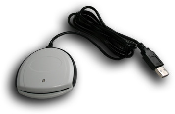
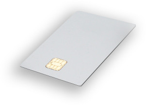

Slovak
SlovakVšetky diely seriálu: 1 2 3 4 5
Posledný diel seriálu je venovaný viacfaktorovej autentizácii s čipovou kartou.
1. Viacfaktorová autentizácia
Závažným nedostatkom VPN siete z minulej časti bol spôsob uskladnenia privátnych kľúčov, ktoré boli uložené v textovom súbore na pevnom disku a pre zjednodušenie neboli dokonca ani chránené heslom. Ochrana privátneho kľúča tak bola plne prenechaná na oprávnenia súborového systému vynucované operačným systémom. Ak by sa niekomu podarilo získať kópiu dát z nášho pevného disku napr. odcudzením zálohy alebo disku samotného, dostal by sa mu do rúk aj privátny kľúč a s ním aj prístup do VPN siete. Ak by bol kľúč chránený heslom (symetrická šifra), útočník by musel túto ochranu najskôr prelomiť napríklad útokom hrubou silou (z angl. brute force attack). V ideálnom prípade by sa nám podarilo kompromitáciu privátneho kľúča odhaliť skôr, než by sa útočníkovi podarilo získať heslo a príslušný certifikát by sme jednoducho zrušili.
Oveľa bezpečnejšie je použiť na uskladnenie privátnych kľúčov špecializované hardvérové zariadenie - čipovú kartu, USB token alebo HSM modul. Ich najväčšou výhodou je skutočnosť, že privátne kľúče z nich nie je možné exportovať. Odcudzenie kľúča je možné dosiahnuť len odcudzením samotného zariadenia. Vo väčšine prípadov si však zmiznutie čipovej karty všimnete ľahšie a oveľa skôr, než skopírovanie súboru. Spomínané zariadenia navyše kontrolujú prístup k privátnemu kľúču a vyžadujú od používateľa zadanie PIN kódu. Princíp PIN a PUK kódu je podobný ako pri SIM kartách, na ktoré sme zvyknutí z mobilných telefónov t.j. 3 nesprávne zadania PIN kódu spôsobia zablokovanie karty a 10 nesprávnych zadaní PUK kódu spôsobí trvalé znefunkčnenie celej karty. Tieto zariadenia teda efektívne potláčajú aj útok hrubou silou.
S nasadzovaním PKI a čipových kariet do informačných systémov je úzko spätý aj pojem viacfaktorová autentizácia. Ak sa naň pozrieme z trošku teoretickej roviny, tak môžeme zjednodušene povedať, že autentizácia je overenie identity používateľa a autentizačný faktor je informácia použitá pri vykonávaní tohto overenia. Ak by sa vám výraz autentizácia náhodou nepozdával, kľudne si jeho výskyt v texte nahraďte pojmom autentifikácia - oba totiž predstavujú to isté.
Medzi najznámejšie autentizačné faktory patria:
- vlastníctvo – niečo čo používateľ vlastní
Napríklad čipová karta, mobilný telefón, grid karta atď. - vedomosť – niečo čo používateľ vie
Napríklad login, heslo, PIN atď. - existencia – niečo čo používateľ je
Napríklad odtlačok prsta, overenie hlasu, biometrické údaje atď.
Ak na prihlasovanie do VPN siete použijeme certifikát a privátny kľúč uložený na čipovej karte, jedná sa o dvojfaktorovú autentizáciu. Pri prihlasovaní totiž budeme musieť použiť niečo, čo vlastníme - čipovú kartu - a niečo, čo vieme - PIN kód. Viacfaktorová autentizácia sa používa aj pri platení platobnou kartou a vo všeobecnosti platí, že čím viac autentizačných faktorov je pri autentizácii použitých, tým je bezpečnejšia.
Pre úplnosť musím dodať, že pod pojmom čipová karta v tomto článku rozumieme inteligentnú kartu (z angl. smartcard) vybavenú vlastným procesorom, EEPROM pamäťou a operačným systémom, schopnú vykonávať kryptografické operácie. Nejedná sa teda o kartu s magnetickým prúžkom, alebo kartu s bezkontaktným čipom, aké sa používajú napríklad pri kontrolovaní prístupu do budov.
2. Príprava čipovej karty
Používanie čipových kariet je v Linuxe možné najmä vďaka projektu OpenSC, ktorého autori vyvíjajú slobodný middleware. Za týmto pojmom sa skrýva sada programov a knižníc, ktoré umožňujú aplikáciám pracovať s čipovou kartou s využitím štandardov ako PKCS#11 alebo PKCS#15.
Na pripojenie čipovej karty k PC je potrebná špeciálna čítačka. Ja v súčasnosti používam USB čítačku od výrobcu SCM Microsystems, konkrétne model SCR 3310, ktorý stojí cca 32 EUR s DPH. Táto čítačka pre svoju činnosť vyžaduje balík pcsc-lite a ovládač CCID, ktorý podporuje nielen túto ale aj viacero ďalších čítačiek. Zoznam podporovaných modelov aj s ich fotkami môžete nájsť na domovskej stránke projektu.

Pre účely tohto článku som sa rozhodol použiť čipovú kartu od spoločnosti Giesecke & Devrient vybavenú operačným systémom STARCOS SPK 2.3, ktorá stojí cca 24 EUR s DPH.

Jedná sa o projektom OpenSC dobre podporovanú kartu, ktorá má však jedno dosť výrazné obmedzenie - podporu kľúčov do veľkosti max. 1024kB.
Táto skutočnosť mi zabránila použiť certifikát vydaný aplikáciou gnoMint v predchádzajúcej časti, pretože bol vydaný pre kľúč s veľkosťou 2048kB.
Vygeneroval som teda nový, menší kľúč, a rovnakým postupom som k nemu vydal certifikát.
Z pohľadu operačného systému si táto čipová karta vystačí s už spomínaným balíkom OpenSC, z ktorého použijeme najmä aplikáciu pkcs15-init na naformátovanie karty a import privátneho kľúča s certifikátom, aplikáciu pkcs15-tool na prezeranie obsahu karty a knižnicu opensc-pkcs11.so, cez ktorú bude s kartou pracovať aplikácia OpenVPN.
Po nainštalovaní vyššie uvedených balíkov (pcsc-lite, ccid driver a opensc) je najskôr potrebné overiť, či systém správne detekoval pripojenú čítačku. Je na to možné použiť nasledovný príkaz:
root@system:~# opensc-tool --list-readers
Readers known about:
Nr. Driver Name
0 pcsc SCM SCR 3310 (21120804236493) 00 00
Ak vo výpise vidieť uvedenú čítačku, môžeme do nej vložiť kartu a inicializovať ju príkazom:
root@system:~# pkcs15-init --create-pkcs15 --no-so-pin
Tento príkaz zabezpečí vytvorenie súborového systému PKCS#15 bez SO (Security Officer) PIN kódu. SO PIN sa používa v organizáciách, kde je potrebné koncovým používateľom zabrániť v manipulácii s objektmi uloženými na karte, pretože ak je vytvorený, vyžaduje sa jeho zadanie pri vytváraní, importe alebo mazaní ľubovoľného objektu (kľúčového páru, certifikátu, súboru).
Následne je potrebné vytvoriť používateľský PIN príkazom:
root@system:~# pkcs15-init --store-pin --auth-id 01 --label "jimrich"
New User PIN.
Please enter User PIN:
Please type again to verify:
Unblock Code for New User PIN (Optional - press return for no PIN).
Please enter User unblocking PIN (PUK):
Please type again to verify:
Tento PIN kód bude označovaný identifikátorom “01” a pre jednoduchšiu orientáciu som mu priradil aj názov “jimrich”. Pri vytváraní PIN kódu je možné zadať aj PUK kód.
Pomocou nástroja pkcs15-tool si teraz môžeme zobraziť informácie o čipovej karte a overiť tak úspešnosť predchádzajúcich krokov:
root@system:~# pkcs15-tool --dump
PKCS#15 Card [OpenSC Card]:
Version : 1
Serial number : 1490552300041722
Manufacturer ID: OpenSC Project
Last update : 20090110225848Z
Flags : EID compliant
PIN [jimrich]
Com. Flags: 0x3
ID : 01
Flags : [0x32], local, initialized, needs-padding
Length : min_len:4, max_len:8, stored_len:8
Pad char : 0x00
Reference : 131
Type : ascii-numeric
Path : 3f005015
Výpis by mal obsahovať informácie o formáte karty a o objekte predstavujúcom používateľský PIN kód.
V tejto chvíli nám už nič nebráni v tom, aby sme na kartu importovali privátny kľúč VPN klienta uložený v súbore s názvom client1.key.
Keďže formát karty PKCS#15 podporuje existenciu viacerých používateľských PIN kódov, je potrebné v nasledujúcom príkaze pomocou parametra --auth-id určiť identifikátor PIN kódu, ktorým bude chránený prístup k tomuto privátnemu kľúču:
root@system:~# pkcs15-init --store-private-key client1.key --auth-id 01
User PIN required.
Please enter User PIN:
Obdobne môžeme importovať aj certifikát VPN klienta:
root@system:~# pkcs15-init --store-certificate client1.cer
User PIN required.
Please enter User PIN:
Certifikát je na karte uložený ako verejný objekt, ktorý nie je chránený PIN kódom, a preto nie je potrebné uvádzať parameter --auth-id.
Pri vytváraní objektu je však potrebné zadať používateľský PIN kód, pretože vytvoriť objekt na čipovej karte môže len autentizovaný používateľ.
V tomto momente sa už na karte nachádza privátny kľúč i certifikát VPN klienta a jej štruktúra je nasledovná:
root@system:~# pkcs15-tool --dump
PKCS#15 Card [OpenSC Card]:
Version : 1
Serial number : 1490552300041722
Manufacturer ID: OpenSC Project
Last update : 20090110230029Z
Flags : EID compliant
PIN [jimrich]
Com. Flags: 0x3
ID : 01
Flags : [0x32], local, initialized, needs-padding
Length : min_len:4, max_len:8, stored_len:8
Pad char : 0x00
Reference : 131
Type : ascii-numeric
Path : 3f005015
Private RSA Key [Private Key]
Com. Flags : 3
Usage : [0x4], sign
Access Flags: [0x1D], sensitive, alwaysSensitive, neverExtract, local
ModLength : 1024
Key ref : 145
Native : yes
Path : 3f005015
Auth ID : 01
ID : 45
Public RSA Key [Public Key]
Com. Flags : 2
Usage : [0x4], sign
Access Flags: [0x0]
ModLength : 1024
Key ref : 0
Native : no
Path : 3f0050153048
Auth ID :
ID : 45
X.509 Certificate [Certificate]
Flags : 2
Authority: no
Path : 3f0050153149
ID : 45
Karta je teda pripravená slúžiť ako bezpečné úložisko privátneho kľúča pre VPN klienta.
3. OpenVPN a PKCS#11
Aplikácia OpenVPN s čipovými kartami spolupracuje pomocou rozhrania PKCS#11, ktoré je de facto štandardným rozhraním pre prácu kryptografickým hardvérom a výrobcovia zväčša spolu s kartami dodávajú aj knižnice s jeho implementáciou.
Keďže sme v tomto prípade kartu formátovali pomocou nástrojov OpenSC, budeme k nej pristupovať pomocou knižnice opensc-pkcs11.so, ktorá je súčasťou tohoto balíka.
Aplikácia OpenVPN podporuje rozhranie PKCS#11 až od rady 2.1, z ktorej doposiaľ nevyšla stabilná verzia, takže vo väčšine prípadov si ju budete musieť zostaviť zo zdrojových kódov sami. Nie je to žiadny problém, no ešte pred tým však budete potrebovať nainštalovať aj knižnicu pkcs11-helper, ktorá je jedným z podprojektov OpenSC.
Aby ste si pri zostavovaní “nestabilnej” verzie OpenVPN neprepísali vašu distribučnú verziu, odporúčam inštalovať do adresára /usr/local napríklad nasledujúcim postupom:
root@system:~# wget http://openvpn.net/release/openvpn-2.1_rc15.tar.gz
root@system:~# gunzip openvpn-2.1_rc15.tar.gz
root@system:~# tar -xvf openvpn-2.1_rc15.tar
root@system:~# cd openvpn-2.1_rc15
root@system:~# ./configure --prefix=/usr/local
root@system:~# make
root@system:~# make install
Cesty k súborom s privátnym kľúčom a certifikátom v konfiguračnom súbore VPN klienta používajúceho čipovú kartu nahrádza identifikátor objektu na čipovej karte. Identifikátory objektov akceptované aplikáciou OpenVPN je možné zobraziť nasledovným príkazom:
root@system:~# /usr/local/sbin/openvpn --show-pkcs11-ids /usr/lib/pkcs11/opensc-pkcs11.so
The following objects are available for use.
Each object shown below may be used as parameter to
--pkcs11-id option please remember to use single quote mark.
Certificate
DN: /C=SK/L=Bratislava/CN=Client 1
Serial: C8
Serialized id: OpenSCx20Project/PKCSx20x2315x20SCard/1490552300041722/OpenSCx20Cardx20x28jimrichx29/45
Ak by vám aplikácia OpenVPN pri použití parametru --show-pkcs11-ids vypísala chybu, tak pravdepodobne používate verziu z rady staršej než 2.1 alebo vami použitá verzia nebola zostavená s podporou rozhrania PKCS#11.
V takom prípade pomôže overiť, či v systéme máte nainštalovanú knižnicu pkcs11-helper a znova zostaviť OpenVPN zo zdrojových kódov.
Hodnota položky “Serialized id” vo vyššie uvedenom výpise je spomínaný identifikátor objektu (privátneho kľúča a certifikátu), a preto je potrebné ju prekopírovať do konfiguračného súboru VPN klienta, ktorý bude mať v tomto prípade nasledovný obsah:
# Konfiguracny subor VPN klienta
client
dev tun
remote 192.168.1.1
tls-remote 192.168.1.1
ca openvpnca.cer
pkcs11-providers /usr/lib/pkcs11/opensc-pkcs11.so
pkcs11-id 'OpenSCx20Project/PKCSx20x2315x20SCard/1490552300041722/OpenSCx20Cardx20x28jimrichx29/45'
comp-lzo
keepalive 10 60
ping-timer-rem
persist-tun
persist-key
daemon
Po spustení si OpenVPN vyžiada zadanie PIN kódu, ktorým je chránený privátny kľúč uložený na karte:
root@system:~# /usr/local/sbin/openvpn --config ~/client.conf
Sun Jan 11 10:40:02 2009 OpenVPN 2.1_rc15 i686-pc-linux-gnu [SSL] [LZO2] [EPOLL] [PKCS11] built on Jan 10 2009
Sun Jan 11 10:40:02 2009 PKCS#11: Adding PKCS#11 provider '/usr/lib/pkcs11/opensc-pkcs11.so'
Sun Jan 11 10:40:04 2009 WARNING: Make sure you understand the semantics of --tls-remote before using it (see the man page).
Sun Jan 11 10:40:04 2009 NOTE: OpenVPN 2.1 requires '--script-security 2' or higher to call user-defined scripts or executables
Sun Jan 11 10:40:04 2009 LZO compression initialized
Sun Jan 11 10:40:04 2009 UDPv4 link local: [undef]
Sun Jan 11 10:40:04 2009 UDPv4 link remote: 192.168.1.1:1194
Enter OpenSC Card (jimrich) token Password:
Sun Jan 11 10:40:08 2009 [192.168.1.1] Peer Connection Initiated with 192.168.1.1:1194
Sun Jan 11 10:40:09 2009 TUN/TAP device tun1 opened
Sun Jan 11 10:40:09 2009 /sbin/ifconfig tun1 10.1.1.6 pointopoint 10.1.1.5 mtu 1500
[opensc-pkcs11] card-starcos.c:1346:starcos_logout: APDU re-transmit failed: Unknown error
[opensc-pkcs11] card-starcos.c:1346:starcos_logout: APDU re-transmit failed: Unknown error
Sun Jan 11 10:40:12 2009 Initialization Sequence Completed
V mojom prípade sa zobrazilo aj chybové hlásenie informujúce o neúspechu vykonania “logout” príkazu na čipovej karte. Nespozoroval som však, že by malo na funkčnosť VPN siete nejaký vplyv.
4. Naozaj bezpečné?
Použitie čipovej karty výrazne znížilo riziko odcudzenia privátneho kľúča, no doteraz opísaný postup má jeden zásadný nedostatok. Privátny kľúč bol generovaný v externej aplikácii (gnoMint) a bol z nej exportovaný do súboru na pevnom disku počítača. Počas tejto doby teda mohol byť odcudzený. Navyše ak zdrojový súbor z disku nebol odstránený bezpečným spôsobom, môže byť jeho obsah za istých okolností obnoviteľný.
Preto je oveľa bezpečnejšie generovať privátny kľúč priamo na karte napríklad aplikáciou pkcs15-init a aplikáciou OpenSSL zostavenou s podporou pre rozhranie PKCS#11 vytvoriť žiadosť o vydanie certifikátu vo formáte PKCS#10.
Obe činnosti však hravo zvládne aj prehliadač Mozilla Firefox, ktorý tieto schopnosti zdedil po svojom predkovi z balíka Mozilla Suite.
Konfiguráciu zariadení podporujúcich rozhranie PKCS#11 v ňom nájdete v menu “Preferences > Advanced > Encryption > Security Devices”.
Po vygenerovaní žiadosti je už potrebné len vydať certifikát napríklad pomocou aplikácie gnoMint a importovať ho na čipovú kartu nástrojom pkcs15-init.
5. Záver
Tak a máme tu koniec seriálu. Ak sa vám vďaka nemu podarilo postaviť vlastnú VPN sieť, môžeme to považovať za happy-end :) Ak ste v ňom niečo postrádali, obráťte sa na oficiálne howto, ktoré bolo mojím hlavným zdrojom informácií.